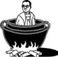

\1\2ğaç\3
Aşağıdaki resimde yanlış olan nedir?

Kazanın büyüklüğünde bir hata vardır.
Bir insanın sığabileceği kadar büyük, su sızdırmayan metal bir kazan yapmak, 19. yüzyılda Batı’da bile çok yeni olan bir teknoloji gerektirirdi. Gerçekteyse, küçük küçük parçalanıp kızartılmanız ya da daha sonra tüketilmek üzere fümelenip tuzlanmanız daha muhtemeldi.
Yamyam kelimesinin İngilizce karşılığı olan “cannibal”, Colombus’un, 1495’te Orta Amerikalı Carib kabilesinin adını yanlış not etmesinden gelir. Colombus yeni sona ermiş bir “Canib” ziyafetinde küçük kazanlarda insan organlarının kaynadığını ve şişlere takılmış parçaların ateşte pişirildiğini yazmıştır.
Başka kaşifler de Güney Amerika, Afrika, Avustralya, Yeni Gine ve Pasifik’te yamyamlık olduğunu yazmışlardır. Kaptan Cook, Maorilerin esir aldıkları düşmanlarını yediklerinden emindi. İkinci yolculuğunda sağ kolu Charles Clerke, bir Maori savaşçısının buyruğuyla bir parça kafa pişirmiş ve kurt gibi aç olan savaşçının kafayı iştahla yediğini ve zevkten defalarca parmaklarını yaladığını yazmıştır.
William Arens, önemli kabul edilen kitabı The Man-Eating Myth’te [İnsan Yeme Miti] (1979) yamyamlık hikâyelerinin Batı sömürgeciliğini meşrulaştırmak için uydurulmuş ırkçı yalanlar olduğunu savundu. Bu iddia, antropologlar arasında “yamyamlık inkarı” dönemine neden oldu.
Fakat yeni bulgular çoğu tarihçi ve antropoloğun, birçok kabilede, çoğunlukla geleneksel törenler için, bazen de beslenme amacıyla yamyamlığın varolduğunu kabul etmesine sebep olmuştur.
Yamyamlığa izin veren son toplum olan Yeni Gine’deki Fore kabilesi de, kuru (insan beyni ve omurilik sinirlerini yemekten kaynaklanan bir beyin hastalığı) salgını nedeniyle bu geleneğe 1950’lerin ortasında son verdi.
Yamyamlığın varolduğu yönünde arkeolojik kanıtlar da vardır. Fransa, İspanya ve Britanya’da toplu halde parçalanmış insan kalıntıları bulunmuştur. Britanya’da bulunan kalıntılar mö 30 ile ms 130 arasından kalmıştır, bu da Romalıların eski Britanyalıların insan yediğine dair inançlarını doğrulamaktadır.
Ekim 2003’te Fiji köyü sakinleri, 1867’de ataları tarafından öldürülüp yenmiş olan İngiliz misyoneri Thomas Baker’ın ailesinden resmi bir özür dileyeceklerini açıkladılar. Yerliler Baker’ın botlarını bile yemeye çalışmıştı, fakat botlar çok sert oldukları için 1993’te Metodist Kilisesi’ne geri gönderildi.